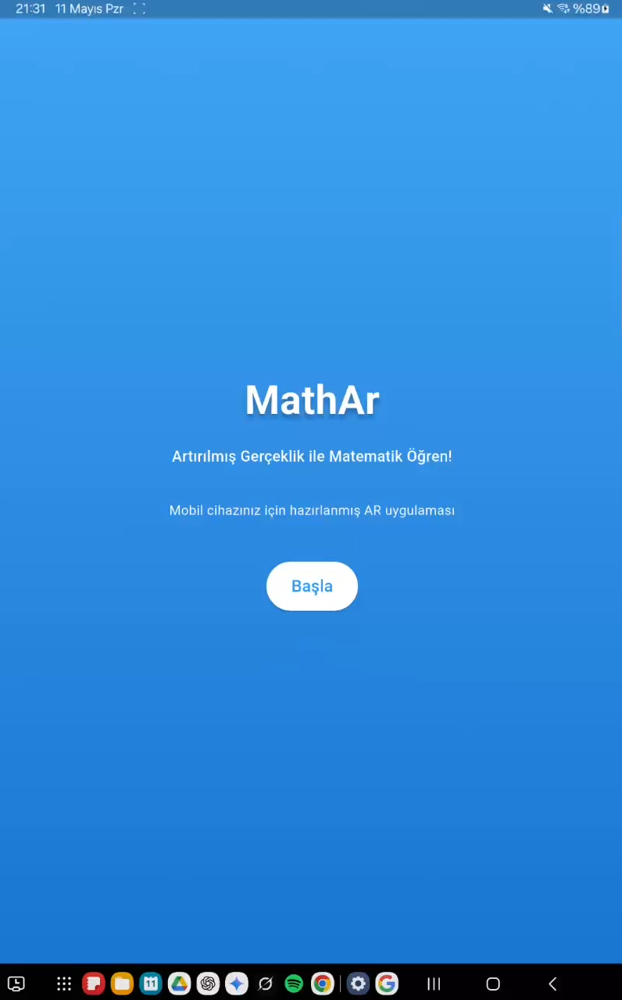
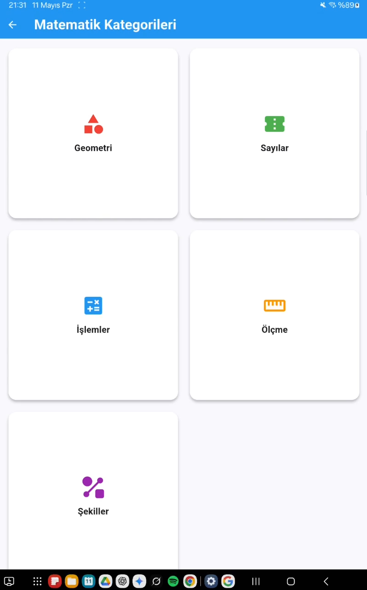
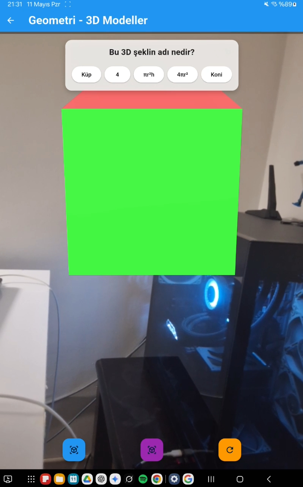
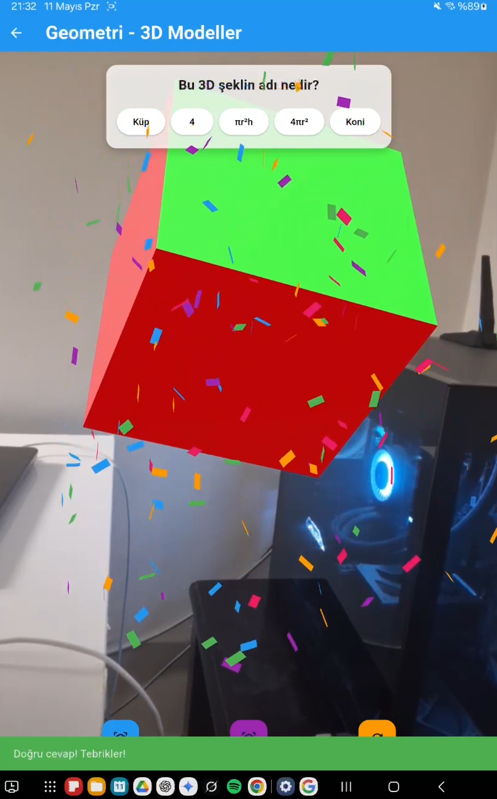
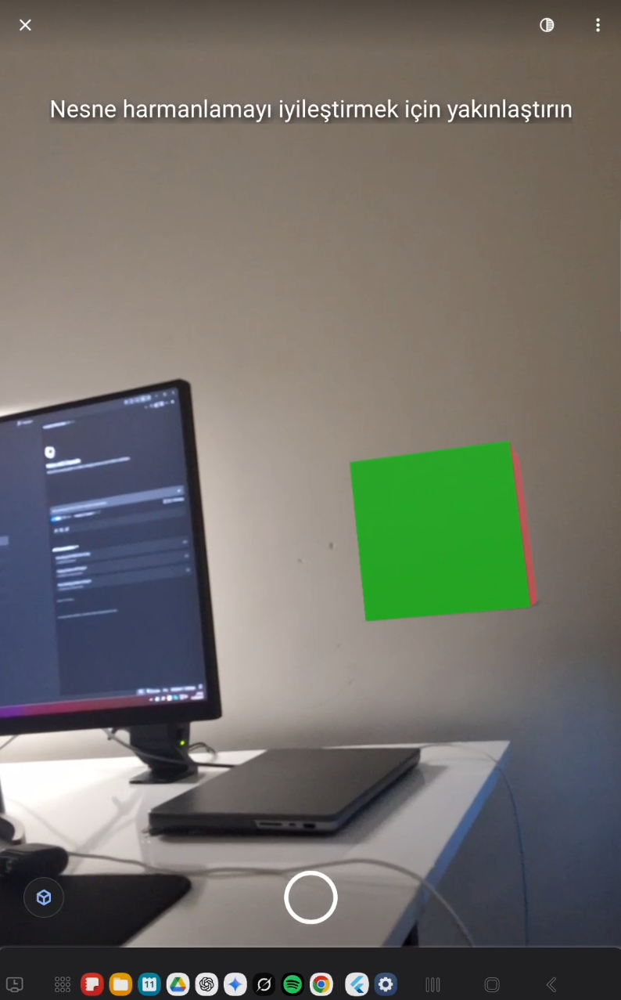
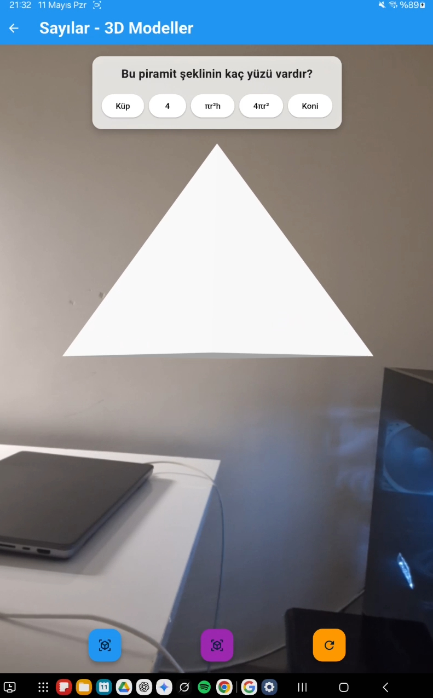
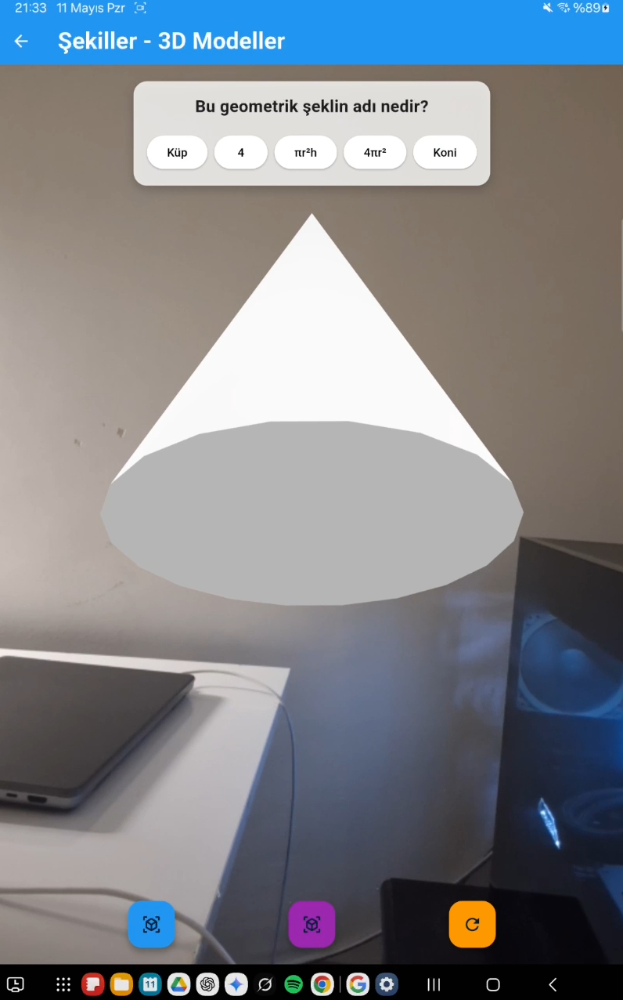
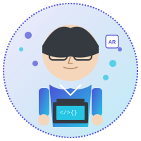

AR teknolojisiyle matematik kavramlarını görselleştiren, interaktif öğrenme deneyimi sunan yenilikçi eğitim platformu.
MathAR, Zar Game Company tarafından geliştirilen ve çocukların matematik öğrenme sürecini AR (Artırılmış Gerçeklik) teknolojisiyle destekleyen yenilikçi bir eğitim platformudur.
Geleneksel matematik öğretim yöntemlerini AR ile birleştirerek, soyut matematiksel kavramları 3D görsel modeller halinde sunuyoruz. Bu sayede öğrenciler sayıları, geometrik şekilleri ve matematiksel işlemleri fiziksel dünyada görerek öğrenebiliyorlar.
MathAR AR matematik uygulamasından ekran görüntüleri ve mockup tasarımları







Küp, küre, piramit gibi geometrik şekilleri AR ile gerçek ortamda görüntüleyin ve manipüle edin.
Havada yazılan sayıları tanıyan ve işlem sonuçlarını görsel olarak gösteren AR hesap makinesi.
Fonksiyon grafikleri, pasta dilimleri ve çubuk grafiklerini 3D olarak keşfedin.
Matematik becerilerini geliştiren, seviyeli mini oyunlar ve challenge'lar.
Başarıları takip eden, motivasyonu artıran rozet ve başarım sistemi.
Öğrenme ilerlemesini takip eden detaylı analiz ve raporlama sistemi.

AR teknolojileri ve eğitim içeriği konusunda uzman. Macera Haritası'nın teknik altyapısından ve AR deneyimlerinden sorumlu.